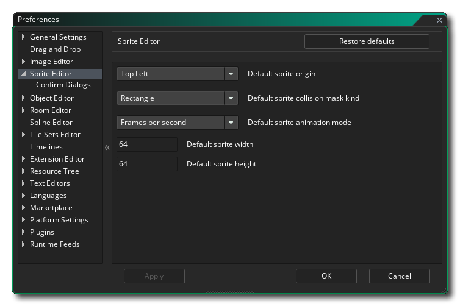
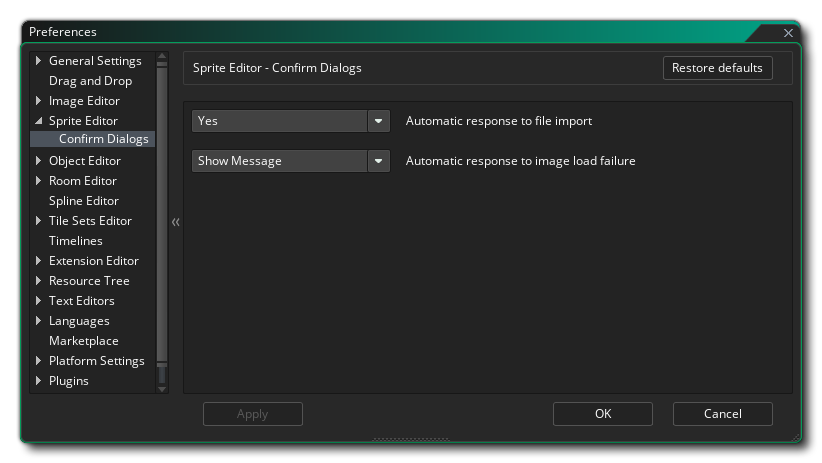

Les préférences de l' éditeur d'images- objets permettent de définir l'aspect et les fonctions de l' éditeur d' images-objets. L'option suivante existe:
La sous-catégorie suivante existe également pour l'éditeur Sprite:
Les options disponibles ici contrôlent les messages qui apparaissent lorsque sont nécessaires pour confirmer une action. Vous pouvez modifier ces paramètres pour afficher toujours le message ou le rejeter avec une action spécifique (oui ou non):
- Réponse automatique à l'importation de fichier: lorsque vous importez une nouvelle image et qu'il en existe déjà une, vous serez invité par défaut à poursuivre l'importation et à remplacer l'image existante ou à annuler l'opération. Cette option vous permet de supprimer ce message et toujours d'annuler l'importation en sélectionnant "Non" ou de remplacer l'image-objet actuelle en sélectionnant "Oui". La valeur par défaut est "Afficher le message".
- Réponse automatique à un échec de chargement d'image: lorsque vous importez une nouvelle image et que cette dernière échoue, un message d'avertissement vous informe par défaut qu'un échec est survenu. Cette option vous permet de supprimer ce message en sélectionnant "OK". La valeur par défaut est "Afficher le message".